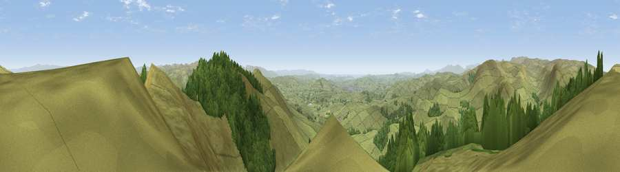

Ashstead Fell
#2128 in England · top 6% of its area beats it · near SelsideThe view, rendered

A 360° render of this exact spot computed from the terrain model, tree cover and land cover — summer colours, afternoon light, calibrated against photographs of famous viewpoints. Real trees, hedges and buildings will differ in detail.
The panorama
Grey silhouette: terrain skyline in each direction (720 bearings, Earth curvature and refraction included). Dashed green: skyline with trees (+15 m) and buildings (+8 m) as obstacles. Blue strip: how far the ground is visible on each bearing.
Where the view opens
Wedge length = distance to the farthest visible ground on that bearing (vegetation-aware). Rings at 10, 25 and 50 km.
What fills the view
79% grassland · 21% woodland
Angular shares of the visible panorama (visual magnitude), not map area. Landscape diversity 0.24 (0–1 Shannon).
Key numbers
More beautiful places nearby
The staircase of upgrades: each row has a higher view potential than everything closer. Driving times are estimates from straight-line distance, calibrated against real road routing — check an actual route before setting out.
| Place | Direction | Drive | Score |
|---|---|---|---|
| Castle Fell | SE · 2 km | ~4 min | 77.2 |
| Viewpoint near Garnett Bridge | WNW · 3 km | ~8 min | 77.6 |
| Viewpoint c9961_7292 | ESE · 10 km | ~19 min | 78.2 |
| Fell Head | ESE · 10 km | ~19 min | 78.8 |
| Viewpoint near Sadgill | NW · 12 km | ~22 min | 79.7 |
| Ill Bell | WNW · 13 km | ~24 min | 80.9 |
| High Street (summit) | NW · 14 km | ~26 min | 82.6 |
| Viewpoint near Watermillock | NNW · 21 km | ~35 min | 83.5 |
54.41794, -2.68057 · source: osm peak · position refined by local search. Computed location — check access rights before visiting.